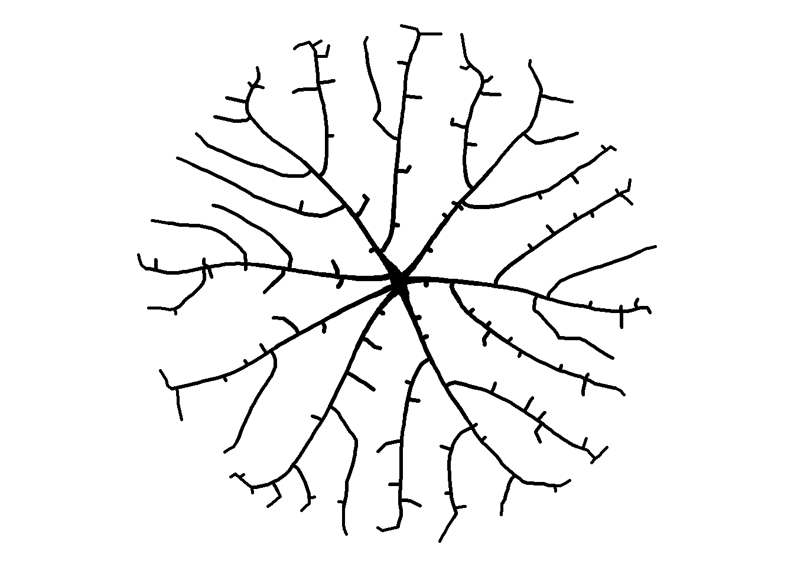

library(dplyr)
library(ggplot2)
set.seed(1)
att <- data.frame(x = runif(50, 0, 10), y = runif(50, 0, 10))
head(att)Space Colonization
R
ggplot2
generative art
Organic looking life forms from math.
Continuing the series of generative art posts, I liked the look of the canvas_petri() images from the aRtsy package. That led me to this article that describes the algorithm behind the canvas_petri() in enough detail that I thought I could give it a shot.
Space Colonization Algorithm
Turns out the images are generated using something called the space colonization algorithm. When I first read that, this kind of space colonization came to mind.

That’s not it, though. They mean colonizing the space inside of, say, a circle. Borrowing an image from the article above, we’re looking for something more like this.

Jason’s article does a good job describing the algorithm and shows images to visualize the process, so I’ll just paraphrase. It goes like this:
- Randomly place points in some sort of bounding shape (rectangle, circle, etc.). These are called “attractors”.
- Place one or more “nodes” in the same shape. These will serve as the starting points for the vein-like lines in the above image. In the image above, there’s just one starting node in the middle right.
- For every attractor, find the node closest to it. If you start with one “seed” node, of course there’s only one node to choose from. We’ll add nodes in a later step, so this gets more complicated as we progress.
- Find the coordinates of the centroid of the attractors closest to each node.
- Add another node some distance away from the original node in the direction of the centroid.
- Now consider a radius around each attractor - Jason called that area the kill zone. If any new nodes are within an attractor’s kill zone, delete the attractor.
- Continue this process until all attractors have been deleted.
- Visualize by plotting lines between all of the nodes.
Seems relatively straight forward, so let’s do it step by step.
Place Attractors
I’ll place 50 attractors in a 10 x 10 square.
Place A Node
Easy enough. I’ll just put it in the center of the square. I’m adding a couple other columns to this data frame. n will keep track of the node numbers, and s will be used to keep track of line segments.
nodes <- data.frame(n = 1, x=5, y=5, s=1)Find The Closest Nodes
Again, finding the closest node to each attractor is trivial when there’s only one node, but it will get more complicated as we add nodes. First, though, as I was working through this script, I found that sometimes at this step attractors are aready within the kill zone, so let’s check for that and delete them if needed.
kill_distance <- 0.25
att <- att[sapply(1:nrow(att),
function(x)
min(sqrt((att[x, ]$x - nodes$x)^2 + (att[x, ]$y - nodes$y)^2)) > kill_distance), ]
nrow(att)[1] 50Not this time, but we’ll re-use this bit of code after adding new nodes. I’m going to add a new column cl to record the closest node number to each attractor.
att$cl <- sapply(1:nrow(att),
function(x)
nodes[which.min(sqrt((att[x, ]$x - nodes$x)^2 + (att[x, ]$y - nodes$y)^2)), "n"])
head(att)Centroids
Since node 1 is the closest to all attractors, there’s only one centroid to find. mx is the mean x coordinate, and my is the mean y coordinate. We also need the angle, theta from the node to the centroid.
# get each centroid coords
ns <- unique(att$cl)
mx <- sapply(ns, function(x)mean(att[att$cl==x, "x"]))
my <- sapply(ns, function(x)mean(att[att$cl==x, "y"]))
# get the angle from the nodes to the centroids
thetas <- sapply(
1:length(ns),
function(x)
ifelse(mx[x] > nodes[nodes$n==ns[x], "x"],
atan((my[x] - nodes[nodes$n==ns[x], "y"]) / (mx[x] - nodes[nodes$n==ns[x], "x"])),
pi + atan((my[x] - nodes[nodes$n==ns[x], "y"]) / (mx[x] - nodes[nodes$n==ns[x], "x"])))
)
print(round(c(mx, my, thetas), 2))[1] 5.33 5.03 0.09Add New Nodes
I initialize the line segment counter I mentioned earlier. This is just to keep track of the segments for plotting purposes. I store the values in the s column. newx and newy are the coordinates for each new node. I store each new node along with the line segment information in a data frame called new_n, and then combine it with the nodes data frame. While I’m at it, I delete an attractor if a new node is within its kill zone. We should now have three rows in nodes: the original node associated with segment 1, and the original node and new node associated with segment 2.
seq_count <- 1 # sequence counter
seg_len <- 0.1 # the length of the line segment to a new node
for (i in 1:length(ns)){
seq_count <- seq_count + 1
newx <- seg_len * cos(thetas[i]) + nodes[nodes$n==ns[i], 'x']
newy <- seg_len * sin(thetas[i]) + nodes[nodes$n==ns[i], 'y']
new_n <- data.frame(n = 1:2 + max(nodes$n),
x=c(nodes[nodes$n==ns[i], 'x'], newx),
y=c(nodes[nodes$n==ns[i], 'y'], newy),
s=rep(seq_count, 2)
)
nodes <- rbind(nodes, new_n)
# check if the node is within kill distance of an attractor
att <- att[sapply(1:nrow(att),
function(x)
min(sqrt((att[x, ]$x - nodes$x)^2 + (att[x, ]$y - nodes$y)^2)) > kill_distance), ]
}
nodesLet’s plot it to see what we have so far. The red line connects the nodes, and the attractors are dark green.
ggplot() +
geom_path(data=nodes, aes(x=x, y=y, group=s),
color="red", size=2, lineend="round") +
geom_point(data=att, aes(x=x, y=y),
color="darkgreen", size=2) +
coord_fixed() +
theme_bw() +
theme(legend.position="none")Now it’s just a matter of grinding through it until we finish deleting the nodes. Before we do that, let’s put all that code into a get_colony() function because we’re going to want to mess around with the different values we set earlier. We’ll want to pass different shapes and arrangements of attractors, specify the seed, number of attractors, the kill zone, line segment length, and the coordinates of the first node (the trunk). The only thing new in the code below is the while loop, which checks for an empty att dataframe - our stopping condition for when all of the attractors have been deleted
get_colony <-
function(att, seed=1, kill_distance=0.25, segment_length=0.1, trunk_x=0, trunk_y=0){
set.seed(seed)
# where the colony starts from
nodes <- data.frame(n = 1, x=trunk_x, y=trunk_y, s=1)
# delete attractors that are already within kill distance
att <-
att[sapply(1:nrow(att),
function(x)
min(sqrt((att[x, ]$x - nodes$x)^2 + (att[x, ]$y - nodes$y)^2)) > kill_distance), ]
seq_count <- 1
seg_len <- segment_length
while (nrow(att) > 0){
# id the closest node to each attractor
att$cl <-
sapply(1:nrow(att),
function(x)
nodes[which.min(sqrt((att[x, ]$x - nodes$x)^2 + (att[x, ]$y - nodes$y)^2)), "n"])
# get each centroid coords
ns <- unique(att$cl)
mx <- sapply(ns, function(x)mean(att[att$cl==x, "x"]))
my <- sapply(ns, function(x)mean(att[att$cl==x, "y"]))
# get the angle from the nodes to the centroids
thetas <- sapply(
1:length(ns),
function(x)
ifelse(mx[x] > nodes[nodes$n==ns[x], "x"],
atan((my[x] - nodes[nodes$n==ns[x], "y"]) / (mx[x] - nodes[nodes$n==ns[x], "x"])),
pi + atan((my[x] - nodes[nodes$n==ns[x], "y"]) / (mx[x] - nodes[nodes$n==ns[x], "x"])))
)
# add a new segment in that direction
for (i in 1:length(ns)){
seq_count <- seq_count + 1
newx <- seg_len * cos(thetas[i]) + nodes[nodes$n==ns[i], 'x']
newy <- seg_len * sin(thetas[i]) + nodes[nodes$n==ns[i], 'y']
new_n <- data.frame(n = 1:2 + max(nodes$n),
x=c(nodes[nodes$n==ns[i], 'x'], newx),
y=c(nodes[nodes$n==ns[i], 'y'], newy),
s=rep(seq_count, 2)
)
nodes <- rbind(nodes, new_n)
# check if the node is within kill distance of an attractor
att <-
att[sapply(1:nrow(att),
function(x)
min(sqrt((att[x, ]$x - nodes$x)^2 + (att[x, ]$y - nodes$y)^2)) > kill_distance), ]
if (nrow(att) < 1) break
}
}
nodes
}Visualizations
Let’s finish what we started. Here I call the function with the same parameters as earlier, and the function returns a data frame with all of the nodes for plotting.
df <-
get_colony(att, kill_distance=0.25, segment_length=0.1, trunk_x=5, trunk_y=5)
head(df)And here it is.
ggplot() +
geom_path(data=df, aes(x=x, y=y, group=s),
color="red", size=2, lineend="round") +
geom_point(data=att, aes(x=x, y=y),
color="darkgreen", size=2) +
coord_fixed() +
theme_bw() +
theme(legend.position="none")Pretty weird looking, right? We can make a more interesting image by adding more attractors (500!), plotting only the line segments, and adding some varying thickness to the lines.
set.seed(1)
att <- data.frame(x = runif(500, 0, 10), y = runif(500, 0, 10))
df <-
get_colony(att, kill_distance=0.25, segment_length=0.1, trunk_x=5, trunk_y=5)
ggplot() +
geom_path(data=df,
aes(x=x, y=y, group=s, size=1/s),
color="black", lineend="round") +
coord_fixed() +
theme_void() +
theme(legend.position="none")Circles
That’s a little better. It’s getting that organic feel to it, I think. Let’s try a bounding circle instead of a square. We’ll put the starting seed in the middle of the circle at (0, 0).
set.seed(1)
# put all the attractors in a circle
a <- runif(500) * 2 * pi
r <- 5 * sqrt(runif(500))
att <- data.frame(x = r*cos(a), y = r*sin(a))
df <-
get_colony(att, kill_distance=0.25, segment_length=0.1, trunk_x=0, trunk_y=0)
ggplot() +
geom_path(data=df,
aes(x=x, y=y, group=s, size=1/s),
color="black", lineend="round") +
coord_fixed() +
theme_void() +
theme(legend.position="none")
How about moving the starting node to the right?
df <-
get_colony(att, kill_distance=0.25, segment_length=0.1, trunk_x=4.5, trunk_y=0)
ggplot() +
geom_path(data=df,
aes(x=x, y=y, group=s, size=1/s),
color="black", lineend="round") +
coord_fixed() +
theme_void() +
theme(legend.position="none")Trees
Seeing the image above made me think of a sideways bush, and then it occurred to me that I can make a tree-like image by placing the starting node below the bounding circle. While I’m at it, I’ll plot the attractors as green circles like I did earlier to give a leaf-like effect.
df <-
get_colony(att, kill_distance=0.25, segment_length=0.1, trunk_x=0, trunk_y=-8)
ggplot() +
geom_path(data=df,
aes(x=x, y=y, group=s, size=1/s),
color="black", lineend="round") +
geom_point(data=att, aes(x=x, y=y),
color="darkgreen", size=2) +
coord_fixed() +
theme_void() +
theme(legend.position="none")We could continue by exploring different bounding shapes, color combinations, and adjusting all of the function parameters to make a variety of shapes.
a <- runif(250) * pi
r <- 5 * sqrt(runif(250, 0.9, 1.0))
att <- data.frame(x = r*cos(a), y = r*sin(a))
df <-
get_colony(seed=2, att, kill_distance=0.05, segment_length=0.01, trunk_x=0, trunk_y=-0.02)
ggplot() +
geom_path(data=df,
aes(x=x, y=y, group=s, size=1/s),
color="black", lineend="round") +
geom_point(data=att, aes(x=x, y=y),
color="darkgreen", size=2) +
coord_fixed() +
theme_void() +
theme(legend.position="none")a <- runif(250) * pi
r <- 5 * sqrt(runif(250))
att <- data.frame(x = r*cos(a), y = r*sin(a))
df <-
get_colony(seed=2, att, kill_distance=0.25, segment_length=0.1, trunk_x=0, trunk_y=-4)
ggplot() +
geom_path(data=df,
aes(x=x, y=y, group=s, size=1/s),
color="black", lineend="round") +
geom_point(data=att, aes(x=x, y=y),
color="darkgreen", size=2) +
coord_fixed() +
theme_void() +
theme(legend.position="none")Animated Tree
One last idea. Let’s animate the tree “growing”!
You can click here for my Shiny app to generate your own art using this and other algorithms. Enjoy!